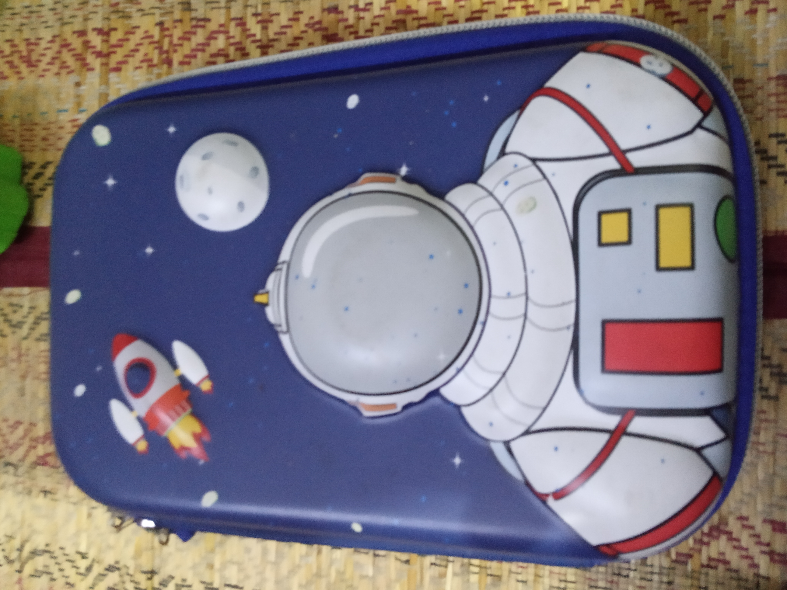
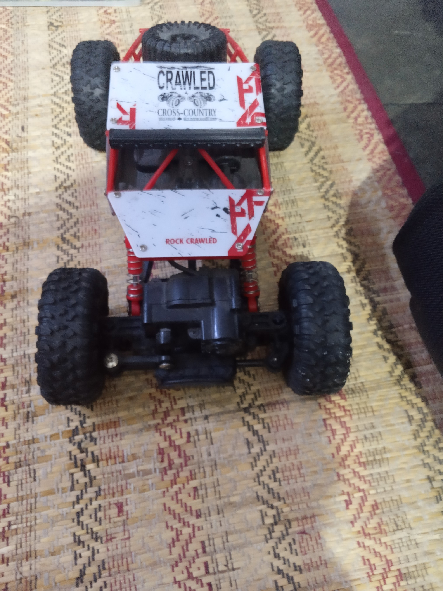

Case Study

Output on Microsoft Azure : cartoon
Output on MobileNet project : pencil box
Most accurate project : MobileNet
Output on Microsoft Azure project : calculator
Output on MobileNet project : remote control
Most accurate project : Microsoft Azure

Output on Microsoft Azure project : Land vehicle
Output on MobileNet project : holster
Most accurate project : Microsoft Azure
As per inspection I have tested 3 images from which Microsoft Azure has predicted 2 correctly and MobileNet has predicted 1 correctly. According to me Microsoft Azure is more accurate.